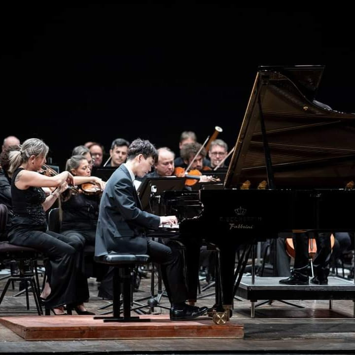
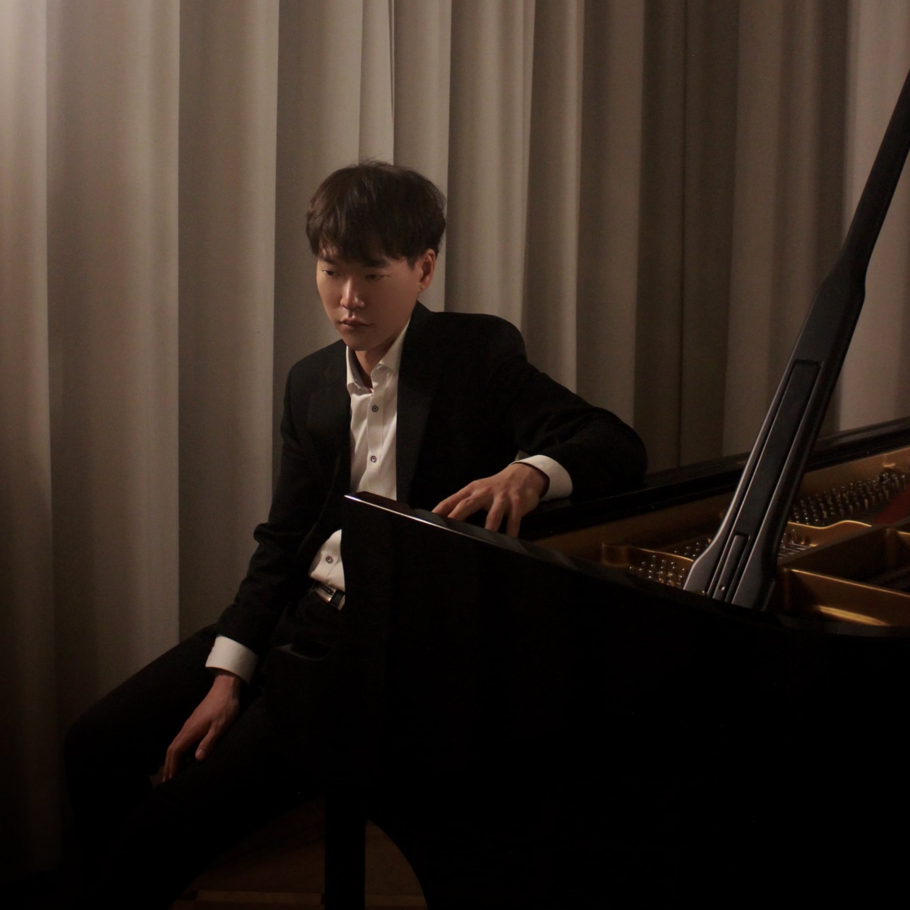
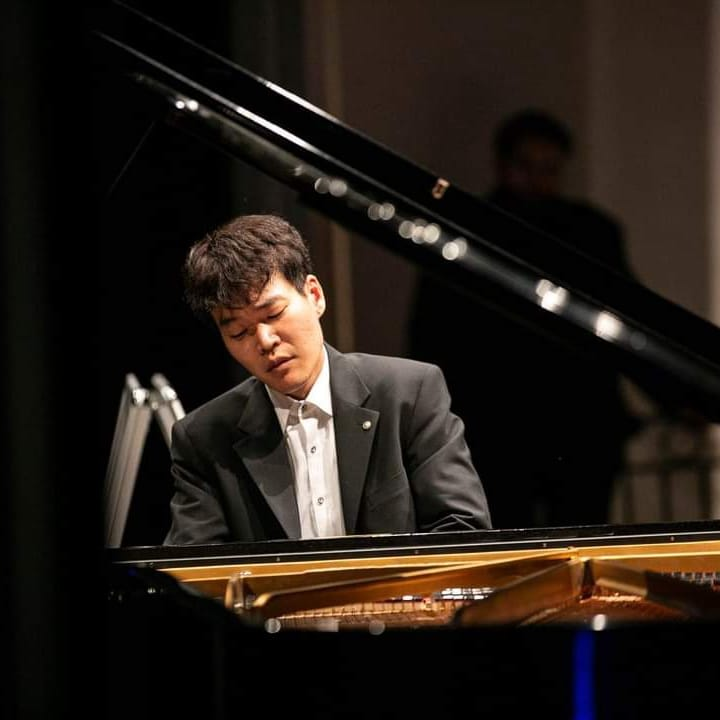
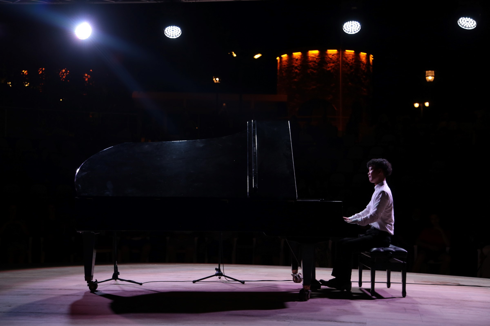

Der aus Südkorea stammende Pianist Kisuk Kwon studierte seit 2018 Klavier an der Hochschule für Musik Detmold in der Klasse von Prof. Hartmut Schneider.
Zahlreiche Auszeichnungen bei international renommierten Klavierwettbewerben bezeugen seine künstlerische Qualität. Dazu zählt der 1. Preis beim 4. International Piano Competition 'Istanbul Orchestra Sion'. Beim 24. Internationalen Klavierwettbewerb „Mauro Paolo Monopoli“ gewann er den 1. Preis sowie den Publikumspreis.
Weitere Auszeichnungen erhielt er beim G.B. Viotti-Wettbewerb (3. Preis), A. Skrjabin-Wettbewerb (2. Preis) sowie „Palma d'Oro“ (2. Preis & Publikumspreis). Als Solist konzertiert Kisuk Kwon in verschiedenen Ländern Europas und ist Gast bei internationalen Musikfestivals.
Kisuk Kwon ist Gewinner des Steinway Förderpreis OWL, ist derzeit als Solist & Korrepetitor tätig,in Bad Füssing und unterrichtet klavier sowie Korrepetition an der HfM Detmold
| 02. April, 17:00 | Klavierabend Bad Füssing, BVK (Bayerischer Versorgungsverband) |
| 05. April, 19:30 | Tschaikowski: Klavierkonzert Nr. 1 Bad Füssing, Großes Kulturhaus Info & Tickets |
| 04. Juni, 19:00 | Klavier & Violine Mit Robert bálint L.v. Beethoven: Kreuzersonate u.a. Passau , Redoute |
| 28. Juni, 17:00 | Klavierabend Bielefeld, Thomaskirche |
| 19. Juli, 17:00 | Klavierabend ( Höxter, Jacob Pins Museum |


